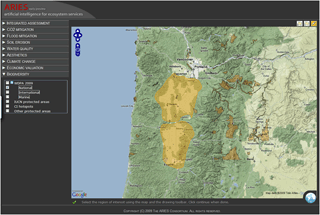

ARIES redefines ecosystem services assessment and valuation in decision-making. The ARIES approach to mapping benefits, beneficiaries, and service flows is a powerful new way to value and manage the ecosystems on which the human economy and well-being depend.
A web-based technology

ARIES is a suite of applications, all delivered to end users through the
Web. All applications have been designed with the help of
professional usability engineers, and are accessible through a standard
web browser. Along with the main toolkit (Ecosystem Services explorer,
Valuation database, and Biodiversity explorer) custom ARIES interfaces
can be built to simplify use by specific groups of end users.

Focus on conservation

ARIES can help improve our understanding of the value to humans of conserving high biodiversity areas. At the same time, it can help conservation planning by identifying crucial areas to protect the flow of ecosystem services to their beneficiaries. ARIES is being used in Madagascar to plan conservation and enhance its value for local communities.
Focus on business
ARIES can help reduce impact and engender positive change by assisting prioritizing the conservation of ecosystem services flows to local communities and locating critical flow areas to protect and enhance in order to achieve positive offsetting of the consequences of operations. These applications can help businesses reduce liability, maintain and improve a positive corporate image, and explore new revenue streams.